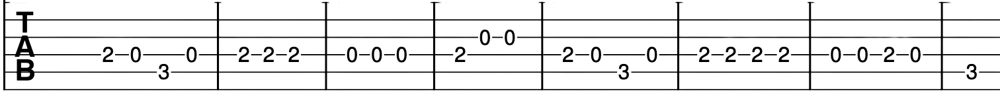

Let's try a few new songs with the F chord. If you feel the full bar chord is too difficult then try playing
the reduced chord and work your way up.
The Clash - London Calling
Johnny Cash - Hurt
Calvin Harris ft Rihanna - This Is What You Came For
C Major Scale

A Major Scale

D Major Scale

E Major Scale

C Major Arpeggio

Try playing Mary had a Little Lamb. Play it slowly to get used to the feel
of the song before playing it at a regular speed.
